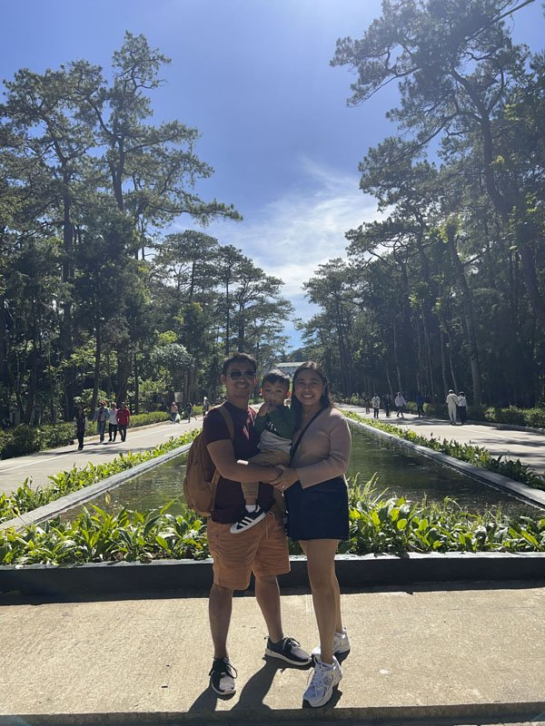
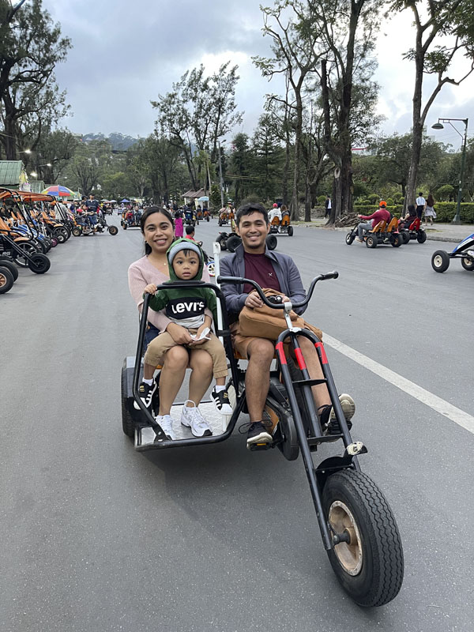
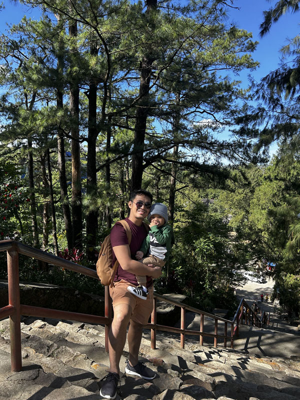
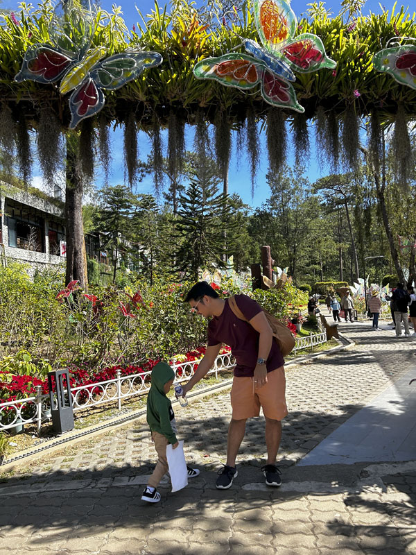

The best things to do in Baguio are mostly simple and close together: walk Session Road and Burnham Park, take a boat out on the lake, see the view from Mines View, wander Wright Park and the Botanical Garden, spend an afternoon under the pines at Camp John Hay, eat strawberry taho and Cordillera food, and end the day at the Harrison Road night market. Add Tam-awan Village, Diplomat Hotel on Dominican Hill and a trip out to La Trinidad's strawberry farm, and you have more than enough for a long weekend.
This list picks fifteen things worth your time, with a short note on each about what to expect, when to go and how much time to give it. It is meant for planning, not ticking boxes: three or four a day is plenty in a city where traffic and cold mornings shape the pace.
Entrance fees and opening hours change, especially around holidays, Panagbenga and the Christmas season, so check on the day before making a special trip.

Quick Picks
Best things that cost nothing
Session Road, Burnham Park, Wright Park, Mines View, Camp John Hay's trails and the night market are all free to enjoy.
Best with kids
Burnham Park bikes and boats, the Botanical Garden, Camp John Hay and, from late October, the Christmas Village.
Best at night
The Harrison Road night market, the lit-up cathedral and the city lights from the hills.
15 Best Things to Do in Baguio
1. Walk Session Road
Session Road is Baguio's main street, lined with bakeries, cafés, old restaurants and shops. Walk it early, before the crowds, and use it as your base for everything else in the centre. During Panagbenga, it is closed to traffic for a week of street stalls and exhibits.
2. Visit Baguio Cathedral
The pink-walled Our Lady of the Atonement Cathedral sits on a hill above Session Road, reached by a long flight of steps. It is a working church, so dress modestly and keep quiet during Mass. The view from the steps over the city is part of the visit, and the building looks especially striking lit up at night.
3. Spend a morning at Burnham Park
The city's central park has gardens, bike rentals, playgrounds and the lake at its heart. Families rent bikes and pedal karts on the paths, and the park is busiest on weekend afternoons, so come in the morning for space.

4. Take a boat out on Burnham Lake
Boats are back on the lake after a year-long rehabilitation, with a new boardwalk around the water. The city set the rate at ₱250 per boat for 30 minutes; agree the price before you board and ask for a receipt. Our guide to Burnham Lake boat rentals has the details.
5. Catch the view at Mines View Park
Mines View's lookout gives a wide view over the Benguet mountains and the old mining areas below. Go early, before the tour vans arrive and the fog rolls in. The souvenir stalls around it are a good place to compare prices on woodcraft and woven goods.
6. Buy ube jam at the Good Shepherd Convent
Next to Mines View, the Good Shepherd Convent sells the city's best-known pasalubong: ube jam made at the Mountain Maid Training Center, whose sales have supported young people from the Cordillera since 1952. Go in the morning, because popular items can sell out on weekends.
7. Walk Wright Park and The Mansion
Wright Park has pine-shaded stone stairways, a riding circle with ponies for hire, and a long reflecting pool that leads to the gates of The Mansion, the official summer residence of the president. You can view The Mansion from outside its gates. Allow an hour for an easy walk.

8. Explore the Botanical Garden and the new Arboretum
The Baguio Botanical Garden on Leonard Wood Road has themed gardens, a flower-covered walkway and the Cordillera Village. The Baguio Arboretum next door opened in October 2026, and one ticket covers both: ₱110 for tourists aged 13 and up.

9. Slow down at Camp John Hay
The former American rest and recreation base is now a wide estate of pine forest, lawns, trails, restaurants and hotels. The Bell Amphitheater, a terraced garden bowl ringed by pines, is at its best in early morning light. Bring a jacket; it is cooler under the trees.
10. See the ruins of Diplomat Hotel
On Dominican Hill, the shell of the old Diplomat Hotel, first built as a Dominican retreat house in the early 1900s, stands over the city. It is a heritage site with an unusual, slightly eerie atmosphere and good views. Go in daylight and stay within the open areas.
11. Visit Tam-awan Village
Tam-awan is an artists' village on the city's west side, with traditional Cordillera houses moved and rebuilt on a hillside, small galleries and a viewing point. It is a calm introduction to the region's culture, and Farmer's Daughter nearby is a good place to try Cordillera dishes afterwards.
12. Eat your way through the city
Start with strawberry taho from a street vendor, share a feast at Good Taste, try pinikpikan and etag at a Cordillera restaurant, and finish with strawberry shortcake. Our Baguio food guide covers what to order and where locals eat.
13. Shop the Harrison Road night market
Most nights from about 9 p.m., part of Harrison Road by Burnham Park fills with stalls selling second-hand clothes, jackets, shoes and snacks. Bring cash in small bills, a torch to check items, and patience in the crowd.
14. Pick strawberries in La Trinidad
The strawberry farm in La Trinidad, just outside the city, is one of the most visited spots in Benguet. Picking season runs roughly from November to May. Combine it with the painted houses of the Valley of Colors on the way back.
15. Linger in a café with a view
Baguio's cafés make the most of the hills and the cool air, from ridge-top decks to quiet specialty coffee shops pouring Benguet Arabica. Pick one for a slow afternoon when the fog comes in.
Seasonal Extras
From late October to early January, the Baguio Country Club Christmas Village draws families with lights and artificial snow. In February, the Panagbenga flower festival fills the city with a street dance and a float parade, and the city is busiest of the year. December to February brings the coldest mornings, when fog over the pines is at its most atmospheric.
Making the Most of Your Visit
Four habits that help you see more with less stress.
Group stops by area
Do the centre on foot one day and the Mines View side another. Crossing town at rush hour wastes hours.
Go early
Viewpoints and gardens are quietest before 9 a.m., and views are clearer before the afternoon fog.
Pack layers
Mornings and evenings are cool all year and cold from December to February. A light jacket earns its place in any bag.
Carry small bills
Taxis, vendors, boat operators and market stalls mostly take cash.
If you only have a few days, our Baguio 3-day itinerary puts most of this list into a day-by-day plan, grouped by area to keep you out of traffic.

Comments
No comments yet. Been here recently? Share a tip or ask a question.
Leave a Reply